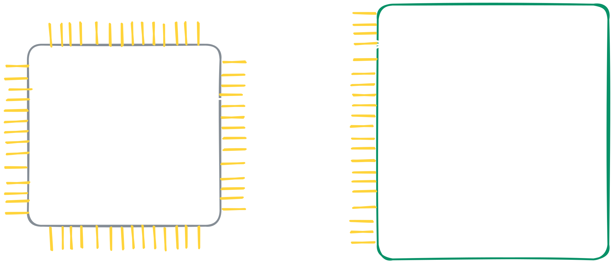

“The purpose of abstraction is not to be vague, but to create a new semantic level in which one can be absolutely precise.” - Edsger W. Dijkstra
In the previous section, we talked about the global descriptor table, and how segments are used to divide memory into logical parts so it is easier to manage.
Although this system worked in older 32bit operating systems, it will not be good for our operating system, but why is that?
Before we define paging, let’s understand what we want for our operating system memory management.
For starters, I can think about the following things:
Basic permissions (i.e read, write and execute)
Kernel mode and user mode.
Every process has it’s own address space.
At first glance, we may see that all of this can be achieved via segmentation. This is because we can create multiple segments, one for each process code, data etc which creates the process separation. Also, each segment has a read, write and execute permissions, while also utilizing the CPU rings for kernel and user mode.
So why do we need another system for managing memory?
Let’s draw a scenario, we will have three processes, A and B, and we will look at our memory, for convenience, we will manage memory at multiplications of 0x100.
Figure 2-1: simple memory layout with segmentation
As we can see, every program has it’s own memory, additionally, we can define segments like coda_a, data_a, stack_a etc, so we have organization and permission control.
But this picture demonstrates a major problem that there is with segmentation, can you spot it? if not that’s fine.
Let’s now assume that process B wants more memory, it asks the operating system for another 0x100 bytes. Because the bytes that are contiguous to this process are free, this can be done without any problem and it can just be extended. But, process A is in a problem, and it now needs another buffer of 0x400 bytes, although we do have this amount of free memory, we can’t give it to him because it is not contiguous to it. This problem is called fragmentation.
So now you might ask, how can we solve this problem?
I suggest you to think how would you solve this fragmentation problem!
As always, the explanation of the solution that is used today will be below
Just before explaining how paging works, let’s define some core terms.
Physical Memory - This is the actual memory that is used, and it has absolute addresses. This is the address space that our hardware talks.
Virtual Memory - This is the address space of our user and kernel processes, because we want to make an illusion that each process has it’s own address space, addresses are absolute only inside the process, For example, both process A and process B can use address number 0x100. But, on both of these processes the address will translate into a different physical address so we can read and write data to it.
The concept of virtual memory is not new to us. For example, when we discussed before about creating different segments for each process,
we created a virtual memory space for each process in terms of accessing data or executing code.
These addresses would then translate to a physical address as we defined in the global descriptor table
Just before explaining paging, I want you to know that there are four paging modes1 and they all cover the same concepts, and the key difference is the tables layout. We are going to talk about the third type, which is called 4-level paging and is mostly used on modern computers.
In memory paging we divide our physical memory into units that are called pages, which are blocks of contiguous memory of fixed size (4Kib, 2Mib or 1Gib). Then we create a mapping between the virtual address space, and the physical one. Each process holds a different mapping, hence a different virtual address space.
In the figure bellow we can see this mapping.
for simplification, I changed the block size to 0x100 instead of 0x1000 (4096 bytes) but the principles are still the same.
Figure 2-2: simple process memory layout using paging
In this example we can see that even if process B wants more memory, it is not blocked by process A, and can just ask our operating system for more memory
and it will map it just after process A thus solving the fragmentation problem. You may also notice that I marked some memory as “Used For Paging” this is because the mapping itself takes some memory and it is not a small portion.
Although it solved our problem for most cases, it makes addresses easily virtually contiguous but we might still have fragmentation if we need our addresses physically contiguous. This case is mainly useful for hardware, and will be discussed on later chapters.
When we used segments we knew how to translate virtual address into a physical one. We would go to the appropriate entry in the global descriptor table, and we would take the base address of it, and add it to our virtual address, which would give us the physical address.
In paging the address translation process is a bit more complicated, and it is done with four hierarchical tables.
The official names for those tables are Page-Map Level 4 (PML4), Page Directory Pointer Table (PDPT), Page Directory Table (PDT) and Page Table (PT).
In this book I will not use these names because they are complicated, and I am just going to number each level, PML4 being the 4th level, and PT being the 1st level.
The page table, just like the global descriptor table, is an array of 512 page table entries.
Each entry contains a physical address aligned to 0x1000, that is pointing to a memory regions, and also flags represents configuration and permissions for the memory page mapped by the entry.
On a typical entry, there are 8 flags that are used with an optional 12 flags in total, in our operating system we will configure some of the optional flags, but not all of them.
#[repr(C)]#[repr(align(4096))]#[derive(Debug)]pubstructPageTable{pubentries:[PageTableEntry;PAGE_DIRECTORY_ENTRIES],}implPageTable{/// Create an empty page table#[inline]pubconstfnempty()->Self{Self{entries:{[PageTableEntry::new();PAGE_DIRECTORY_ENTRIES]},}}}impl PageTable
/// A wrapper for `PageTableEntry` flags for easier use#[bitfields]pubstructPageEntryFlags{pubpresent:B1,pubwritable:B1,pubusr_access:B1,pubwrite_through_cache:B1,pubdisable_cache:B1,#[flag(r)]pubaccessed:B1,#[flag(r)]pubdirty:B1,pubhuge_page:B1,pubglobal:B1,pubfull:B1,pubtable:B1,pubroot_entry:B1,}
You may have noticed the dont_shift flag in our PageTableEntry address. This flags is used in our proc-macro to indicate that the value in the bit range of 12:63 should be given to us raw and not shifted, and also it will be set raw and not shifted.
This is because the address that is saved in the entry is aligned to a page size (1 << 12, or 4096 bytes.)
As an example, on most flags we are interested on the value relative to the entry size, like with ProtectionLevel when we store a value between 1-4, and expected to get 1-4 in return no matter where it is on the struct. With the address we store the exact address value, and get it in return as we set it, thus the dont_shift flag.
Because of how addresses are translated, addresses are actually capped by 48bits, which results in 256Tib of addressable memory, and if this is somehow not enough,
new processors support a 5th table hierarchy, which support 57bit address space, or 128Pib of addressable memory.
The address the entry points to, is between bits 12 and 48. Because the pointed address is always aligned to 0x1000, only the upper 36 bits of the pointed address are saved.
In addition, when we use the top half of the address space, where the 47th bit is on, we must also set bits 63-48 to 1 because of something that is called the sign extension.
To translate an address, a special hardware on the CPU, which is called the MMU (Memory Management Unit) is used.
To understand how the MMU works, lets look at an example translation, with the following address:
Figure 2-3: Walking the page tables
The first thing the the MMU is doing, is to check if this page was already translated and cached. If it was, it returns the cached value.
If the page was not cached, the MMU splits our address into multiple parts.
Bits 00-11: In page offset
Bits 12-20: 1st table index
Bits 21-30: 2nd table index
Bits 31-39: 3rd table index
Bits 40-47: 4th table index
Bits 48-63: Sign extension
Figure 2-4: Split Address
Each index will help us obtain the location of the next table, until we reach the final physical page. Then we can use the offset to obtain the specific byte in that page.
After that, the MMU reads the CR3 Register from the CPU to find the address of the 4th page table.

Figure 2-5: CR3 Register and the 4th Page Table
Then, we walk the tables, using the indices from our address to obtain the location of the next table, until we reach the final physical page.
Figure 2-6: Walking the page tables
After we found our physical page, we use the offset within our page, to locate the specific byte that the address points to resulting in the final physical address.
This address is saved on the cache for later use, so we don’t have to walk the tables again for the same address.
Just before we will implement the core functionality of paging, we will need to create some utility structs of VirtualAddress and PhysicalAddress.
These will just be a wrapper struct of usize and will implement certain functions that are relevant on addresses.
To implement all the simple and basic functionality, we will use a trait, so we won’t have much boilerplate. We will also use the great derive_more crate, which will provide us basic derives for operator like deref, and mathematical operations.
Then, we can define all the functionality that we want for our address types, and implement the trait on them.
pubconsttraitAddress:Sized+Clone+Copy{/// Create new instance without checking for address alignment.////// # Safety/// This function should not check for sign extension.unsafefnnew_unchecked(address:usize)->Self;fnnew(address:usize)->Option<Self>;fnas_usize(&self)->usize;fnas_non_null<T>(&self)->core::ptr::NonNull<T>{core::ptr::NonNull::new(ptr:core::ptr::with_exposed_provenance_mut::<T>(addr:self.as_usize()),)Option<NonNull<T>>.expect("Tried to create NonNull from address, found null")}fnis_aligned(&self,alignment:core::ptr::Alignment)->bool{self.as_usize()&(alignment.as_usize()-1)==0}fnalign_up(self,alignment:core::ptr::Alignment)->Self{unsafe{Self::new_unchecked(address:(self.as_usize()+(alignment.as_usize()-1))&!(alignment.as_usize()-1),)}}fnalign_down(self,alignment:core::ptr::Alignment)->Self{unsafe{Self::new_unchecked(address:self.as_usize()&!(alignment.as_usize()-1),)}}fnalignment(&self)->core::ptr::Alignment{unsafe{ifself.as_usize()==0{// Address 0 is aligned to any alignment; return max// representable.core::ptr::Alignment::new_unchecked(align:1<<(usize::BITS-1))}else{core::ptr::Alignment::new_unchecked(align:1<<self.as_usize().trailing_zeros(),)}}}}trait AddressimplconstAddressforPhysicalAddress{unsafefnnew_unchecked(address:usize)->Self{Self(address)}fnnew(address:usize)->Option<Self>{#[cfg(target_arch ="x86_64")]ifaddress<(1<<48){unsafe{Some(Self::new_unchecked(address))}}else{None}#[cfg(target_arch ="x86")]unsafe{Some(Self::new_unchecked(address))}}fnas_usize(&self)->usize{self.0}}impl Address for PhysicalAddressimplconstAddressforVirtualAddress{unsafefnnew_unchecked(address:usize)->Self{Self(address)}fnnew(address:usize)->Option<Self>{#[cfg(target_arch ="x86_64")]ifaddress<(1usize<<48){returnSome(unsafe{Self::new_unchecked(address:(((address<<16)asisize)>>16)asusize,)});}else{None}#[cfg(target_arch ="x86")]unsafe{Some(Self::new_unchecked(address))}}fn newfnas_usize(&self)->usize{self.0}}impl Address for VirtualAddress
With these utility structs, we can now start implementing our paging logic. To avoid repetition, we will create some functions which will help us define some default flags, and also to apply custom flags onto our entry. For now, a default flags for an entry, will contain the present flags, which is must for the entry to be counted mapped, and also the writable flags, which will make our memory also writable so we could store data in it.
implPageEntryFlags{/// Default flags for entry that contains page table.pubconstfntable_flags()->Self{PageEntryFlags::new()PageEntryFlags.present(true)PageEntryFlags.writable(true)PageEntryFlags.table(true)}/// Default flags for entry that contains regular page.pubconstfnregular_page_flags()->Self{PageEntryFlags::new().present(true).writable(true)}}impl PageEntryFlags
After that, we can create functions to map an address to an entry, this function should obtain the physical address that should be mapped, and also set the flags for the entry.
pubconstREGULAR_PAGE_SIZE:usize=4096;pubconstREGULAR_PAGE_ALIGNMENT:Alignment=unsafe{Alignment::new_unchecked(align:REGULAR_PAGE_SIZE)};implPageTableEntry{/// Map new frame with the given with the given flags.////// # Safety////// This function doesn't check if address is properly aligned, and if/// the entry was already mapped.// ANCHOR: page_table_entry_map_unchecked#[inline]pubunsafefnmap_unchecked(&mutself,frame:PhysicalAddress,flags:PageEntryFlags,){self.set_flags(flags.present(true));self.set_address(frame);}/// Map a frame to the page table entry while checking/// flags and frame alignment but **not** the ownership/// of the frame address This function **will** set/// the entry as present even if it was not specified in/// the flags.////// # Parameters////// - `frame`: The physical address of the mapped frame////// # Interrupts/// This function will raise a PAGE_FAULT if the entry/// is already mapped////// # Safety/// The `frame` address should not be used by anyone/// except the corresponding virtual address,/// and should be marked owned by it in a memory/// allocator// ANCHOR: page_table_entry_map#[inline]pubunsafefnmap(&mutself,frame:PhysicalAddress,flags:PageEntryFlags,){if!self.get_flags().is_present()&&frame.is_aligned(REGULAR_PAGE_ALIGNMENT){unsafe{self.map_unchecked(frame,flags)};}}}impl PageTableEntry
After mapping an address into an entry, we should also implement the other side of the coin, which is to read the address from the entry. We will implement two core logics, one will be to read the address as is, and return the physical address, the other is based on observation that tables only map memory blocks, or other page tables, so we might want instead of the address to get it as a pointer to a table.
Just before we go to the implementation, what should we return in case there is no mapping, or in the case there is a mapping but it is not a table.
For this exact reason, Rust has the Result<T, E> and Option<T> enum types which helps us express recoverable errors. In this case we will use Result with a custom error using the thiserror crate by David Tolnay.
If you are unfamiliar with the topic of Result, I would highly recommend A Simpler Way to See Results by Logan Smith
Our custom error should currently include two cases, the first one is that there is no mapping, and the second that the mapping is not a table.
#[derive(Error,Debug)]pubenumEntryError{#[error("There is no mapping to this entry")]NoMapping = 0,#[error("This entry contains memory block and not a table")]NotATable = 1,}
implPageTableEntry{/// Return the physical address that is mapped by this/// entry, if this entry is not mapped, return None.// ANCHOR: page_table_entry_mapped#[inline]pubfnmapped(&self)->Result<PhysicalAddress,EntryError>{ifself.get_flags().is_present(){Ok(self.get_address())}else{Err(EntryError::NoMapping)}}/// Return the physical address mapped by this table as/// a reference into a page table.////// This method assumes all page tables are identity/// mapped.// ANCHOR: page_table_entry_mapped_table#[cfg(target_arch ="x86_64")]pubfnmapped_table(&self)->Result<NonNull<PageTable>,EntryError>{// first check if the entry is mapped.letpt: NonNull<PageTable>=self.mapped()?.translate().as_non_null::<PageTable>();// then check if it is a table.letflags: PageEntryFlags=self.get_flags();if!flags.is_huge_page()&&flags.is_table(){Ok(pt)}else{Err(EntryError::NotATable)}}}impl PageTableEntry
The sharp eyed people may notice that we used a function that we didn’t define before, the translate function. For now, don’t worry about it’s details, they will all be discussed on the next chapter. For now just understand that when we toggle paging, the processor assumes all addresses are virtual, so if we will return the physical address the processor will assume it is virtual and will try to translate it. And if we won’t have a one-to-one mapping, the translation will fail and we will have some undefined behavior. The purpose of the translate function it to turn this physical address into a virtual one so we can use it as a normal address. How does it do that? You will have to read the next chapter to find out :)
The last functions that we need to implement, are functions that can create our PageTable on an address. So far we created a function that could create an empty on a variable or a static value, but when we will need to create a lot of tables, or we will need to dynamically create tables this function will not help us. For this reason, we will create a function that will receive a virtual address, and construct on it our page table.
implPageTable{/// Create an empty page table at the given virtual address////// # Safety/// This function works on every address, and will override the data at/// that address// ANCHOR: page_table_empty_from_ptr#[inline]pubunsafefnempty_from_ptr(page_table_ptr:VirtualAddress,)->Option<NonNull<PageTable>>{if!page_table_ptr.is_aligned(REGULAR_PAGE_ALIGNMENT){returnNone;}unsafe{ptr::write_volatile(dst:page_table_ptr.as_non_null::<PageTable>().as_ptr(),src:PageTable::empty(),);Some(page_table_ptr.as_non_null::<PageTable>())}}}impl PageTable
As a last note we will touch on a topic that is sometimes forgotten, which is the Translation Lookaside Buffer.
The TLB is a cache that stores our most recent translations of virtual addresses into physical ones and it is part of the MMU. This is useful because walking the page tables is a task that could take tens or even hundreds of cpu cycles, but instead obtaining the same entry from the cache, which is also called TLB hit, could take as few as 1 cycle because it is just a cache read.
This makes the TLB really useful, but it is not that simple, this is because we should know how to work with it. For example, switching page tables becomes a very expensive task2, because the buffer refreshes.
Also, when we free up a page, we must call the invlpg instruction, which removes every page with the given address from the buffer. If we don’t flush the entry it will become stale, and the cpu will still be able to translate the address even if it is not mapped anymore. This could be a cause to a lot of bugs and some serious security vulnerabilities.
Once you know how one works, you know that for all the others as well. For more information about the four available paging modes you may look at Intel Manual Volume 3 section 5.1.1 ↩
On modern processors, this is not always the case because of the PCID (Process Context Identifier) feature. Which allows multiple processes to share the same TLB, but with different page tables, so when we switch tables only the current process’s entries are invalidated. ↩